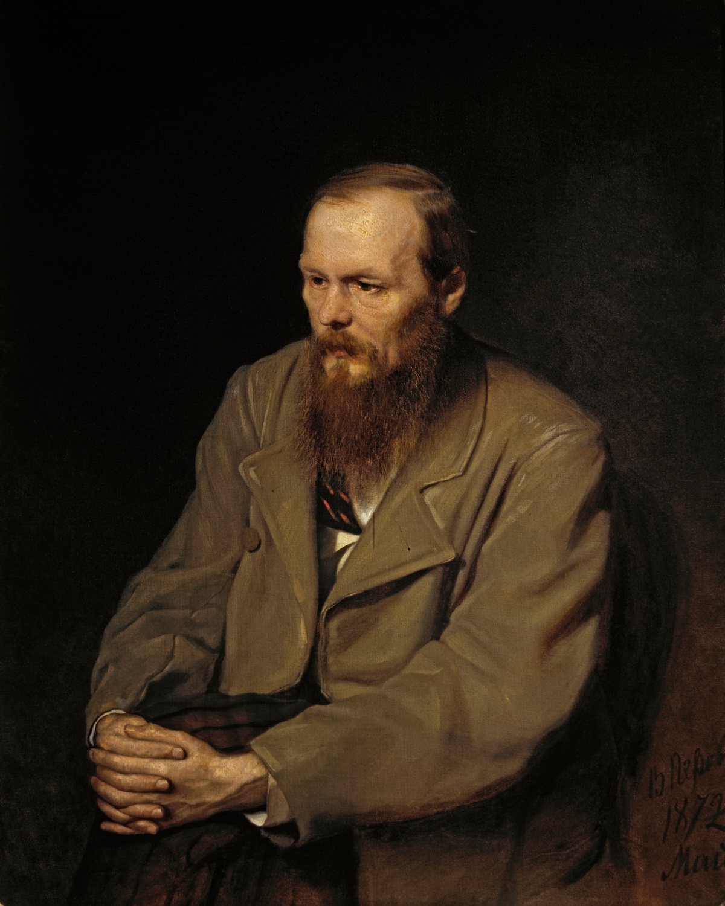
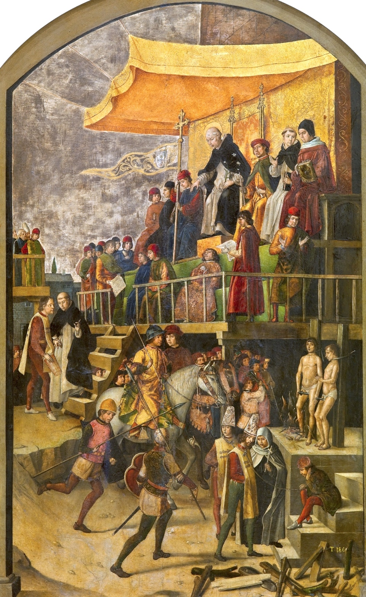
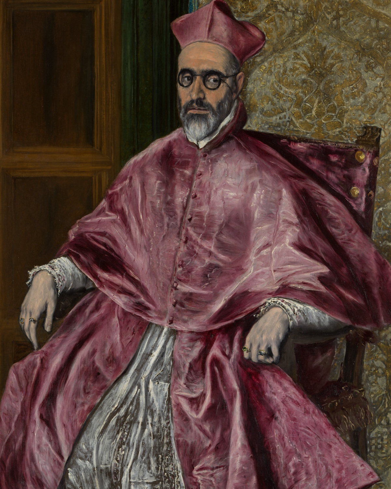

Jesus comes back. Not at the end of the world, just for an afternoon, to a city in southern Spain in the worst year of the Inquisition. People know him at once. He heals a blind man and raises a dead child on the cathedral steps. And the old cardinal who runs the place, who burned a hundred heretics in the square the day before, watches the whole thing, points one finger, and has him arrested.
That is the setup of the most famous chapter Dostoevsky ever wrote, and maybe the most famous argument against God in any novel. It is called "The Grand Inquisitor." It is not really a chapter about Jesus, or even about the Inquisition. It is a story one brother tells another in a tavern, and the man telling it is trying to explain why he cannot accept the world God made, no matter how the story ends.
Here is the strange part. Fyodor Dostoevsky was a serious Christian. He had stood in front of a firing squad, been reprieved at the last second, done four years of hard labor in Siberia, and come out of it holding onto faith with both hands. He wrote this chapter to set up its own refutation. And he was good enough, and honest enough, that the attack came out stronger than the defense. He knew it. "Even in Europe," he wrote to his editor, "there is no such powerful expression of atheism, and there never has been." He meant it as a warning about his own book.

The two brothers are Ivan and Alyosha Karamazov. Alyosha is the gentle one, a novice in a monastery, in love with God and with a wise old monk named Zosima. Ivan is the clever one, an intellectual, the kind of man who has read everything and believes almost none of it. They have never really talked. Now they get one long evening together, and Ivan, who is about to leave, finally says what he actually thinks.
He does it in two moves. First a chapter called "Rebellion," where he explains why he wants nothing to do with God's deal even if every word of it is true. Then "The Grand Inquisitor," the story, where he turns the same knife on the Church. We are going to walk both, in Constance Garnett's 1912 translation, the one that first carried this book into English. Seven stops. Ivan's words come first at each one. Then we take them apart.
Stop 1 / Rebellion
Why he can't love his neighbor
Ivan, in the tavern
"I could never understand how one can love one's neighbors. It's just one's neighbors, to my mind, that one can't love, though one might love those at a distance.... For any one to love a man, he must be hidden, for as soon as he shows his face, love is gone."
Ivan opens with a confession that sounds like a joke and isn't. He cannot love the people right in front of him. Humanity in the abstract, sure. The actual man at the next table, with his smell and his stupid face, no. He says it to clear the ground, because he is about to make an argument that runs entirely on other people's pain, and he wants you to know he is not pretending to be a saint about it.
Then he narrows the subject, hard, on purpose. He is not going to talk about all human suffering. He is going to talk about one kind only: the suffering of children. His reasoning is cold and airtight. Grown-ups, he says, "have eaten the apple." They know good and evil, they have done their share of harm, so when something terrible happens to them you can always tell yourself some story about deserving. Children have not eaten anything. They are innocent in the plain, literal sense, and that makes them the one case where the usual excuses fail.
This is the move that makes the whole chapter work, so it is worth seeing clearly. Ivan is not going to argue about whether God exists. He grants God. He grants heaven. He is building something narrower and much harder to answer: that a certain kind of innocent suffering cannot be squared with a good God no matter what reward comes later. To prove it he needs evidence, not theology. So he has been collecting it.
Stop 2 / Rebellion
The case he builds out of children
Ivan keeps a file. He clips true stories out of newspapers and court records, the way some people keep recipes, and now he reads them to his brother one after another. They are real cases, the kind Russia and Europe actually printed in the 1870s. I am going to do what the chapter does not, and not repeat them in full. The flat fact is enough.
A small girl, five years old, is beaten and tormented by her own educated, respectable parents. For a finish, on cold nights, they lock her in an outhouse. Ivan stays on one detail: the child does not understand what she has done wrong, so in the dark she beats her chest with her tiny fist and prays to "dear, kind God" to make it stop. That is the image he will not let go of.
Ivan, in the tavern
"Why, the whole world of knowledge is not worth that child's prayer to 'dear, kind God'! I say nothing of the sufferings of grown-up people, they have eaten the apple... But these little ones!"
The second story is the one everyone remembers. A general, a rich landowner with his own pack of hunting dogs, has a serf boy of eight, who threw a stone in play and hurt the paw of the general's favorite hound. The next morning the general has the child stripped in front of his mother and the whole household, tells him to run, and sets the dogs on him. They catch him.
Ivan stops there and turns to Alyosha, who is a monk, who has given his whole life to a God of mercy, and asks him point blank: what does the general deserve? And Alyosha, after a pause, says it.
The monk's answer
"To be shot," murmured Alyosha, lifting his eyes to Ivan with a pale, twisted smile.
That two-word answer is the trap closing. Ivan grins, "Bravo," because he has just gotten the gentlest, most devout person he knows to admit that some acts do not want forgiveness, they want a bullet. The believer's own heart just voted against the believer's own creed. Ivan did not have to argue him there. He just had to read the file out loud.
Stop 3 / Rebellion
He gives the ticket back
Ivan, the climax of "Rebellion"
"I don't want harmony. From love for humanity I don't want it.... too high a price is asked for harmony; it's beyond our means to pay so much to enter on it. And so I hasten to give back my entrance ticket.... It's not God that I don't accept, Alyosha, only I most respectfully return Him the ticket."
Here is the famous move, and it is more interesting than plain atheism. Ivan grants the entire Christian promise for the sake of argument. Say it is all true. Say that at the end of time everything is reconciled, every wound healed, and the mother of the boy stands in heaven and embraces the man who set the dogs on her son, and everyone sings that God was just after all. Ivan says: fine. Maybe that day comes. I want no part of it.
Because the price of that final harmony was the child in the outhouse and the boy in the yard, and Ivan refuses to let their suffering be the down payment on anyone's paradise. He calls it returning the ticket. Heaven might be real and worth every star in it, and he is handing back his admission slip at the door, because of what the ticket cost. It is not a claim that God is fake. It is a claim that even a real God's deal is one a decent person can turn down.
He puts it to Alyosha as a direct question, and it is the sharpest sentence in the chapter. Imagine you could build a perfect and happy world for everyone forever, on one condition: you have to torture one small child to death to lay the foundation, and the whole thing rests on its "unavenged tears." Would you agree to be the architect? Alyosha, very quietly, says no. He wouldn't. Neither, I suspect, would you, and Ivan knows it.
Stop 4 / The Grand Inquisitor
Christ comes back, and the Church arrests him
Alyosha, cornered, plays his last card. You have forgotten someone, he tells Ivan. There is one Being who has the right to forgive everything, because he gave his own innocent blood for everyone. He means Christ. And Ivan smiles, because he has been waiting for exactly this, and says: funny you should mention him. I wrote a poem about that. He never wrote it down, he says, he just made it up in his head. It goes like this.
Ivan's "poem," the scene
"My story is laid in Spain, in Seville, in the most terrible time of the Inquisition, when fires were lighted every day to the glory of God, and 'in the splendid auto da fé the wicked heretics were burnt.'"
Christ returns. Not in glory at the end of days, just quietly, for one day, fifteen centuries after the first time, to the worst possible place: Seville, where the day before the cardinal had burned nearly a hundred people in the square in front of the king and the court. The crowd recognizes him instantly. He heals, he blesses, and on the cathedral steps he stops a child's funeral and raises the little girl out of her coffin. The people weep.
And the Grand Inquisitor, ninety years old, sees it. He has the guards take Christ on the spot, and the same crowd that was kissing Christ's feet a second ago bows down to the old man instead and lets it happen. That night the Inquisitor comes down to the prison cell, alone, with a lamp. He knows exactly who his prisoner is. And he has come to explain why, in the morning, he is going to burn him.

Stop 5 / The Grand Inquisitor
The charge: you gave them too much freedom
The Inquisitor, to his prisoner
"Thou wouldst go into the world... with some promise of freedom which men in their simplicity and their natural unruliness cannot even understand, which they fear and dread, for nothing has ever been more insupportable for a man and a human society than freedom."
The old man does almost all the talking. Christ never says a word. And the accusation, once you strip away the robes and the candle, is shockingly modern. It is this: you loved people too much, and you respected them way too much, and it ruined their lives.
What Christ offered, the Inquisitor says, was freedom. The freedom to choose good over evil with no proof, no guarantee, nothing to lean on but your own heart. To Christ that freedom was the whole point, the only kind of love worth having, love freely given by someone who could have walked away. But look at what it does to ordinary people, the old man says. Most of them cannot bear it. Free choice, with eternity riding on it and no one to tell you the answer, is not a gift to the average frightened human being. It is a weight that crushes them.
The Inquisitor
"I tell Thee that man is tormented by no greater anxiety than to find some one quickly to whom he can hand over that gift of freedom with which the ill-fated creature is born."
Read that twice, because it is the engine of the whole speech and it is not stupid. People say they want to be free. What they mostly want, the Inquisitor claims, is for someone to take the freedom off their hands. Someone to tell them what is true, what to eat, what to worship, what is forgiven. The deepest human craving is not liberty. It is relief from liberty. And Christ, by refusing to provide that relief, left billions of weak people alone in the dark with a burden built for giants.

Stop 6 / The Grand Inquisitor
What the Church gave them instead
So the Inquisitor explains what he and the Church have done about it. They fixed Christ's mistake. They took the unbearable freedom away from people, gently, and gave them what they actually wanted. He even tells Christ where the better plan came from, and this is the part that should make your neck prickle: it came from the devil.
Remember the three temptations in the desert, he says, the ones Christ turned down. Turn these stones to bread. Throw yourself from the temple and let the angels catch you. Bow to me and I will give you all the kingdoms of the world. Christ said no to all three, to keep people free. The Inquisitor says that was the blunder, and that those three questions, asked by "the wise and dread spirit," contained the entire secret of how to run human beings. So the Church said yes to what Christ refused.
The three temptations, decoded
The Inquisitor reads the desert temptations (Matthew 4) as a blueprint. Each thing Christ rejected to protect human freedom is, he says, exactly the thing people most need handed to them. He sums the three up in one phrase: miracle, mystery, and authority.
Feed people first and they will follow. "No science will give them bread so long as they remain free," the Inquisitor says. In the end they bring their freedom and lay it at the Church's feet: "Make us your slaves, but feed us." Free and fed, he insists, cannot both be had.
People do not really want God, the old man says, they want the miraculous, something to stun them into belief so they don't have to choose it. Christ refused to be a magic act. The Church gave the miracle back.
Give them someone to obey and one thing to all believe together, and the loneliness of choosing ends. Christ wanted free love; the Church took "the sword of Caesar" and gave the comfort of a crowd that kneels in the same direction.
The Inquisitor's confession
"We have corrected Thy work and have founded it upon miracle, mystery and authority.... We are not working with Thee, but with him, that is our mystery."
There it is, said out loud. We are not on your side, the old man tells Christ. We switched eight centuries ago. We took the devil's offer of earthly power, the sword and the crown, and we used it to build something that actually makes people happy, by lying to them. We let them sin and we forgive it. We carry the unbearable freedom for them so they can live like children, fed and obedient and calm. And we tell them it is all in your name.
This is the dark genius of Ivan's poem. The Inquisitor is not a villain twirling a mustache. By his own account he is a man who loves humanity so much that he is willing to damn himself to spare them a freedom they never wanted. He has looked at people clearly, decided Christ asked too much of them, and quietly taken the burden onto his own back. He thinks he is the only real Christian in the room.
Stop 7 / The Grand Inquisitor
The only answer is a kiss
The Inquisitor finishes. He has talked all night, laid out the whole indictment, and told his prisoner that tomorrow he will burn him. Now he waits. He wants an answer. He half wants to be cursed, argued with, anything. And here is what Christ does, the silent prisoner who has not said one word the entire chapter.
The end of the poem
"But He suddenly approached the old man in silence and softly kissed him on his bloodless aged lips. That was all His answer. The old man shuddered.... 'Go, and come no more... come not at all, never, never!' And he let Him out into the dark alleys of the town. The Prisoner went away."
That is the whole reply. No counter-argument, because there is no counter-argument that beats the Inquisitor on his own terms. Just a kiss, on the mouth of a ninety-year-old man who has just promised to kill him. And the old man, who wanted to be answered, lets him go instead of burning him, and keeps his idea anyway. Ivan adds one last line, the one that tells you he knows what he just did: "The kiss glows in his heart, but the old man adheres to his idea."
One line, two translations: the kiss
The most-quoted sentence in the chapter, and the two great English versions split on a single verb. The Russian is the same; the temperature is not.
Garnett's "glows" is warm, a coal that keeps him company. The newer "burns" is a wound that won't close. Same kiss, and you get to decide whether it comforted the old man or ruined him. Dostoevsky leaves it exactly that open.
Then the frame breaks, and the move repeats in the real world. Alyosha has sat through the whole thing, and his answer to his brother is not a rebuttal either. He gets up, leans over, and kisses Ivan on the lips. "That's plagiarism," Ivan says, delighted. "You stole that from my poem." It is the warmest moment between them in the book, and it is Dostoevsky showing his hand. The reply to the Grand Inquisitor is not a better speech. It is the kiss. Whether that is an answer or a dodge is the question the rest of the novel spends six hundred pages on.
And there is a twist in the old man you should not miss. Late in the poem Alyosha guesses the Inquisitor's secret, and Ivan confirms it: the Inquisitor does not believe in God. He was a faithful man once, fasted in the desert, loved Christ, and somewhere along the way lost it, decided heaven was empty and people were doomed either way, and chose to spend his life making their short doomed lives bearable with a kindly lie. He is not faith's enemy. He is what a saint looks like after his faith dies and his love doesn't.
The sentence Ivan never quite says
There is a line everyone attaches to Ivan Karamazov, usually like this: "If God does not exist, everything is permitted." It is one of the most quoted sentences in modern thought. Sartre built a lecture around it in 1946 and called it the starting point of existentialism. The strange thing is that Ivan never actually says it, not in those words, not in these chapters.
What happens is subtler and more like life. The idea gets attributed to him. Early in the novel other characters report that Ivan has been arguing that without immortality there is no virtue, and so "everything is lawful." It gets thrown back at him by a sneering acquaintance. His brother repeats it. And by the time someone asks him to his face whether he really believes it, Ivan, pale, will only say he won't renounce the formula. He never proudly declares it. It hangs over him like a thing he set loose and can't call back.
"Everything is permitted": one phrase, three ways
The Russian is two words. The English you have heard depends entirely on who translated it, and the choice of word quietly changes the crime.
Why it matters: this loose formula is the fuse that runs through the rest of the book. Ivan thinks he is doing philosophy in a tavern. But the family's servant, a sour, clever man named Smerdyakov, is listening, and he takes "everything is lawful" at face value. If there is no God and no judgment, why not kill the old man we all hate? He does it, and then tells Ivan, calmly, that he only did what Ivan taught. Ivan's clean abstract idea comes back to him with a corpse attached. Dostoevsky's point is not subtle: ideas about God are not free. Somebody downstream always pays the bill.
Dostoevsky's answer, and whether it wins
So what did the believer say back? Almost nothing, directly, and that was on purpose. Dostoevsky did not write a chapter where someone refutes Ivan point by point. He thought that would be cheap, and that an argument this strong could not be beaten by a better argument. Instead he answered it the way the poem answers it, with a kiss, spread across the next six hundred pages.
His reply is the old monk Zosima, and the book he gets right after this one. Where Ivan reasons, Zosima lives. His teaching is almost embarrassingly plain, and it is a practice more than a proof. Love people in the actual, close-up, unbearable way Ivan said he couldn't. And take on a strange, total responsibility: each of us, Zosima says, is answerable for all of us.
Every one is really responsible to all men for all men and for everything.Father Zosima, Book VI
That is the counter to "everything is permitted." Not "no, here is why God exists," but "you have it backwards: you are responsible for everything." Zosima's brother, dying young, decides that "life is paradise, and we are all in paradise, but we won't see it." Alyosha goes out and tries to live it. The answer to Ivan is not a sentence. It is whether a life like that one looks truer to you than the Inquisitor's clear-eyed despair. Dostoevsky bet that it does, and that active love outlasts a perfect argument.
Did he win? Honestly, a lot of readers think Ivan got the better lines, and Dostoevsky may have feared the same. The Inquisitor is unforgettable. Zosima can read like a sermon. The novelist D. H. Lawrence flatly took the Inquisitor's side, calling the old man's bleak realism the truth that Christ's beautiful demand ignores. That reading is alive and well. What you cannot do is pretend the contest was rigged. Dostoevsky handed his unbeliever the strongest case he could build, the case against a God who allows the outhouse and the dogs, and let it stand at full strength. Then he answered it with a man kissing his enemy and a monk saying you are responsible for all of it. He left the verdict to you. After a hundred and fifty years it is still out.
Where the text comes from
The featured walk is Constance Garnett's translation of The Brothers Karamazov (1912), the version that first carried Dostoevsky into English and is now in the public domain. Every quotation is reproduced for study and comparison, from Book V, "Pro and Contra," chapters 4 ("Rebellion") and 5 ("The Grand Inquisitor"), with the closing notes drawn from Book VI, "The Russian Monk." The breakdowns are mine.
- The featured text is Constance Garnett (1912), quoted from Project Gutenberg. Garnett translated some seventy volumes of Russian literature and made Dostoevsky an English author; her prose is graceful and a little Victorian, and later translators fault her for smoothing his deliberate roughness.
- The comparison panels set Garnett against Richard Pevear and Larissa Volokhonsky (1990), the acclaimed modern version, praised for fidelity to Dostoevsky's texture (and where the kiss "burns" rather than "glows"). Two more standard English editions are David McDuff's (Penguin, 1993) and Ignat Avsey's (Oxford, 1994), the most idiomatic of the four, who went so far as to retitle the book The Karamazov Brothers because that is how the name would fall in natural English.
- The Russian phrase «всё позволено» ("everything is permitted") appears, word for word, late in the novel (Book XI). On the attribution of the idea to Ivan, I follow the standard scholarly reading and the text itself: it is a formula others pin on him and he declines to disown, not a slogan he proclaims.
- Dostoevsky's own view of the chapter comes from his 1879 letters to his editor Nikolai Lyubimov, where he frets that the "blasphemy" of his hero is so powerful ("even in Europe there is no such powerful expression of atheism") that the whole rest of the book must answer it. The reading of Book VI and Zosima as that answer is the standard one.
A few honest notes. Ivan's "poem" is prose, and he insists he never wrote it down, so the Grand Inquisitor exists only as something one brother recites to another. Dostoevsky's target in the poem is specifically Roman Catholicism and, behind it, the socialism of his own century, both of which he accuses of trading freedom for bread; the chapter has since been read just as often as a prophecy of the secular dictatorships that came after him. And the claim that this is "the most powerful argument against God ever written" is a common one, not a measured one. It is an argument from one character, inside a story, built to be answered. That it still reads like it might have won is the whole point.
The image on the card is El Greco's Cardinal Fernando Niño de Guevara (about 1600, Metropolitan Museum of Art, public domain): Niño de Guevara served as Grand Inquisitor of Spain, so the painting is a portrait of a real holder of Ivan's old man's office, made in the very years the story is set. The auto-da-fé is Pedro Berruguete's Saint Dominic Presiding over an Auto-da-fé (about 1495, Museo del Prado), and the portrait of Dostoevsky is Vasily Perov's (1872, Tretyakov Gallery). All three are in the public domain.